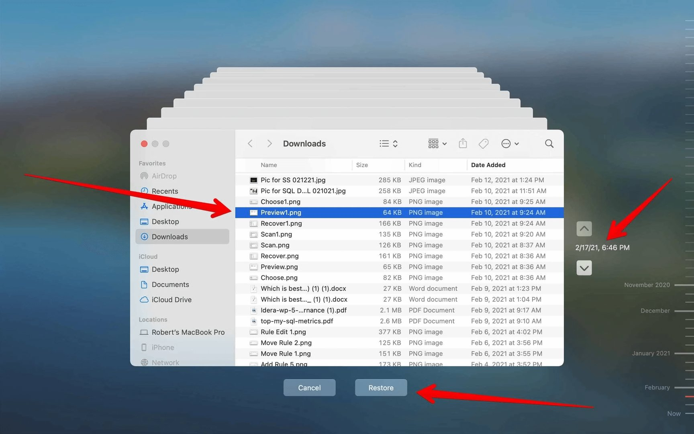
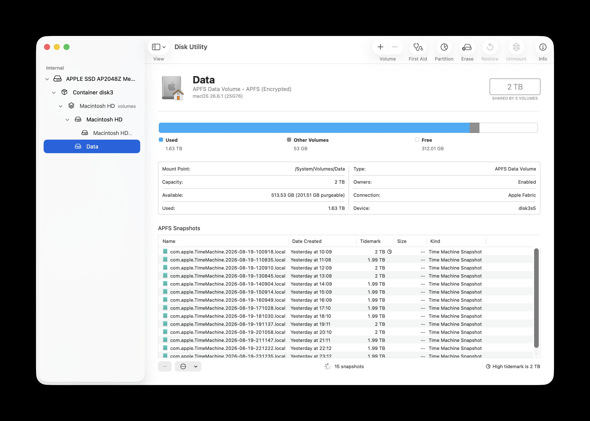

שיעור 07: גיבוי ושחזור¶
מדריך עזר לתלמיד
מטרות השיעור¶
- תמונות מצב (Snapshots)
- גיבוי Time Machine
- שחזור קבצים והתאוששות
- גיבוי בסביבה ארגונית
🎧 האזנה לסיכום¶
מושגי מפתח¶
| מושג | הסבר |
|---|---|
| מכונת הזמן (Time Machine) | מנגנון הגיבוי המובנה של macOS. שומר עותקים היסטוריים של קבצים, מאפשר שחזור קבצים בודדים או מערכת שלמה. |
| APFS Snapshots | הקפאה של מצב מערכת הקבצים בנקודת זמן מסוימת ב-APFS. מאפשר שחזור מיידי (Rollback) ללא צורך בהעתקת נתונים ארוכה. |
| Local Snapshots | Snapshots הנשמרות על הכונן המקומי עצמו (ה-Data Volume). נוצרות אוטומטית כגיבוי ביניים או לפני עדכוני מערכת. הן נמחקות אוטומטית כשהמקום בדיסק אוזל. |
| Synthetic Snapshots | תמונות המצב שנבנות בסוף תהליך הגיבוי על הכונן החיצוני, כחיבור של הבלוקים שהשתנו. |
| Migration Assistant | כלי שירות להעברת נתונים, חשבונות משתמשים והגדרות מ-Mac ישן, מגיבוי Time Machine (באמצעות Synthetic Snapshot), או מ-PC. |
| FileProvider Framework | מנגנון המערכת (API) המאפשר לשירותי ענן כמו OneDrive להציג קבצים שקיימים רק בענן ("Dataless files") ולהורידם רק בעת הצורך. |
| backupd | תהליך הרקע המרכזי של Time Machine המנהל את העתקות הדלתא והגיבויים. |
חלק 1 — Snapshots (תמונות מצב): איך פועל הגיבוי המקומי ב-APFS (Rollbacks)¶
- צפייה וניהול בממשק הגרפי (Disk Utility): פותחים את
Disk Utility, בוחרים בתפריטView > Show APFS Snapshots, ולוחצים על ה-Data Volume. בתחתית החלון נחשפת טבלה מפורטת של כל תמונות המצב המקומיות (com.apple.TimeMachine.*), תאריך יצירתן, והנפח שהן תופסות. - מנגנון ה-Purgeable Space ודמון
deleted(8): פקודתtmutil localsnapshotיוצרת תמונות מצב המוגדרות כ-Purgeable. דמון המערכתdeleted(8)אחראי למחוק אותן אוטומטית כשהמקום בכונן אוזל (מעל 80% תפוסה). עם זאת, ב-macOS 26 Tahoe ה-Finder נוטה להסתיר את היותן Purgeable ולהציגן כתפוסות, ולעיתים נדרש דילול יזום ב-Terminal או מחיקה ידנית ב-Disk Utility.
Note
← המנגנון הפנימי של APFS Snapshots וחישוב שטח ה-Purgeable נלמד לעומק בשיעור 06 (FileSystem) — כאן רואים איך Time Machine סומך על אותו מנגנון כדי לשמור גיבויים מקומיים.
פקודות לניהול Local Snapshots¶
# הצגת רשימה של כל ה-Local Snapshots השמורים על כונן המערכת
tmutil listlocalsnapshots /
# יצירת Snapshot מקומית באופן מיידי (שימושי לפני שינוי מהותי במערכת)
tmutil localsnapshot
# אילוץ המערכת לדלל Snapshots כדי לפנות מקום בכונן (דוגמה זו מפנה כ-10GB בדחיפות 4 המהירה ביותר)
tmutil thinlocalsnapshots / 10000000000 4
# הצגת Snapshots ברמה נמוכה (diskutil)
diskutil apfs listSnapshots /
חלק 2 — Time Machine: לוגיקת הגיבוי למקור חיצון¶
השוואה: אבולוציית הגיבוי של Time Machine | תכונה | Time Machine קלאסי (HFS+) | Time Machine מודרני (APFS) | | :--- | :--- | :--- | | בסיס טכנולוגי | Directory Hard Links (יצירת אשליה של גיבוי מלא) | Synthetic APFS Snapshots | | מערכת קבצים ביעד | HFS+ | APFS | | יעילות העתקה | יצירת מיליוני קישורים קשיחים לקבצים שלא השתנו | מסתמך על Delta-copying ברמת הבלוק (מהיר וחוסך מקום) | | אמינות לטווח ארוך | קריסה שכיחה תחת עומס ה-Hard Links | יציבות גבוהה בזכות תמונות מצב טבעיות של המערכת |
הצפנת כונן הגיבוי
כונן לא מוצפן שנישא בתיק מהווה פרצת אבטחה אדירה. לעולם אל תגבו לאמצעי חיצוני ללא הפעלת Encrypt Backup!
← הצפנת הכונן מבוססת על אותו VEK/AES-XTS שנלמד בשיעור 04 (הצפנה/FileVault) — ההבדל: בגיבוי חיצוני אתם מגדירים סיסמא נפרדת לפתיחת הכונן בעתיד.
ניהול Time Machine דרך הטרמינל (חלק מהפקודות דורשות sudo)¶
# הסטטוס הנוכחי של הגיבוי בזמן אמת
tmutil status
# התחלת גיבוי והשהיית הטרמינל עד להשלמתו
tmutil startbackup --block
# רשימה מסודרת של כל הגיבויים הקיימים המוכרים למערכת ביעד
tmutil listbackups
# מידע ונתונים על כונני היעד המוגדרים כעת
tmutil destinationinfo
# החריגו באופן קבוע קובץ או תיקייה מגיבוי
tmutil addexclusion /path/to/folder_or_file
# הסירו את תגית ההחרגה
tmutil removeexclusion /path/to/folder_or_file
# חילצו לוגים מדויקים כדי להבין עיכובים כמו Deep Traversal Scans
log show --predicate 'subsystem == "com.apple.TimeMachine"' --info --last 4h
חלק 3 — שחזור קבצים: חילוץ קבצים ספציפיים או שחזור מערכת כולל¶
שמות חשבונות (Account Names)
אסור ליצור חשבון זמני (למשל, בשם "john") במחשב החדש, ואז לנסות להגר את החשבון המקורי "john" מגיבוי ה-Time Machine שלכם (בעזרת Migration Assistant). זה ייצור התנגשות מערכתית נוראית.
חלק 4 — תיבול ארגוני: האם בכלל צריך Time Machine בסביבה ארגונית מנוהלת ענן?¶
המחשב בר-החלוף (Ephemeral Device)
בארגונים מודרניים תחת Zero-Trust, נמנעים מכוננים ניידים ועוברים לשימוש מוחלט בשירותי סנכרון ענן (OneDrive, Google Drive). הגישה היא גיבוי בענן והתקנה מרחוק (Zero-Touch) אם המחשב נהרס.
ההתנגשות (FileProvider Clash): קבצים בענן (Dataless) עלולים ליצור עומס קריטי אם Time Machine ינסה לגבות אותם ויכריח את ה-Mac להוריד טרה-בייטים של נתונים מהענן. לכן לרוב אוכפים דרך ה-MDM פרופיל עם restrictTimeMachine.
קישורים ולקריאה נוספת¶
- Back up your Mac with Time Machine
- Restore your Mac from a backup
- About Time Machine local snapshots
- Aren't snapshots purgeable? — תחקיר מעמיק על ניהול שטח פנוי ו-Purgeable Snapshots ב-macOS 26 Tahoe
- Mac backups (Apple Platform Support)
- Erase Apple devices
- A brief history of Time Machine
🎬 סרטון סיכום¶
עזרים ויזואליים¶
המחשה ויזואלית (עזר לתלמיד)
תמונות אלו ממחישות את הממשק או המנגנון הרלוונטי לנושא השיעור.



